Každodenní trávicí komfort
Doplněk stravy na bázi vitaminu C.
Balzám Bolotova je doplněk stravy s jedinečným složením, vytvořený podle receptury akademika Borise Bolotova. Podporuje trávicí komfort jako součást každodenní vyvážené stravy — pro ty, kdo dbají na lehkost po jídle a chtějí svůj jídelníček doplnit uvědoměle.
* Schválená zdravotní tvrzení týkající se vitaminu C (nařízení (EU) č. 432/2012).
Balzám dobře zapadá do jídelníčku těch, kdo dbají na trávicí komfort a lehkost po jídle, jako součást vyváženého životního stylu a zdravé výživy.
Vitamin C přispívá k normální funkci imunitního systému a k ochraně buněk před oxidativním stresem.*
Vitamin C přispívá k normální tvorbě kolagenu pro normální funkci kůže.*
Vitamin C přispívá ke snížení míry únavy a vyčerpání a k normálnímu energetickému metabolismu.*
* Schválená zdravotní tvrzení týkající se vitaminu C (nařízení (EU) č. 432/2012).
Pečlivě vybrané spojení složek potravinářské kvality, vytvořené na základě poznatků akademika Borise Bolotova.
Jemná složka potravinářské kvality, zdroj organických kyselin.
Regulátor kyselosti používaný v bezpečných, přesně stanovených množstvích.
Regulátor kyselosti odpovídající normám potravinářského průmyslu.
Koncentrovaná, bohatá na polyfenoly a antioxidanty.
Přispívá k normální funkci imunitního systému a k normální tvorbě kolagenu.*
Je to přesně vypracovaná receptura — správné spojení a poměry složek. Místo mnoha doplňků nabízíme jeden komplexní produkt.

Objednejte si Balzám Bolotova a zařaďte ho do své každodenní rutiny.
Receptura Balzámu Bolotova vychází z dlouholetého výzkumu akademika Borise Bolotova. Původ receptury a ochranu názvu i značky potvrzují dokumenty a certifikáty.
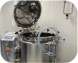
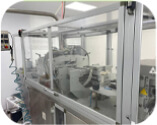
Kliknutím na certifikát jej zvětšíte. Úplný seznam: Certifikáty.

gastroenteroložka
„Jako odbornice přistupuji k doplňkům stravy opatrně. Balzám Bolotova je pečlivě vypracovaný produkt na bázi složek potravinářské kvality — dobře sestavený doplněk každodenní stravy.“
docentka, interní a rodinné lékařství
„Balzám Bolotova je zajímavý a dostupný způsob, jak doplnit každodenní stravu o složky potravinářské kvality. Oceňuji promyšlenou recepturu a kvalitu produktu. Je to dobrá volba pro ty, kdo chtějí o sebe každý den uvědoměle pečovat.“

odborník na bylinnou medicínu
„Balzám Bolotova obsahuje pečlivě vybrané složky v promyšlených poměrech. Je to produkt, za kterým stojí znalosti a dlouholetá zkušenost. Oceňuji přístup založený na kvalitě surovin a promyšlené receptuře.“
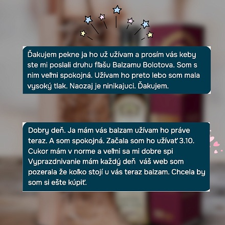
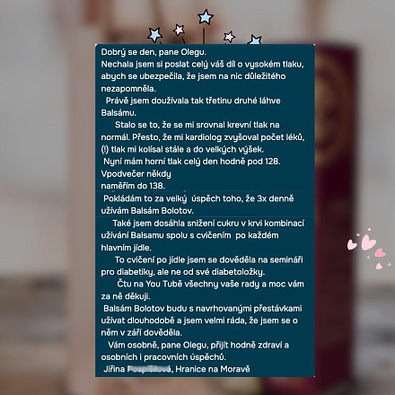
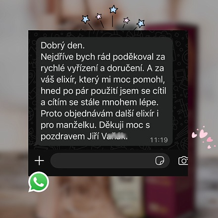
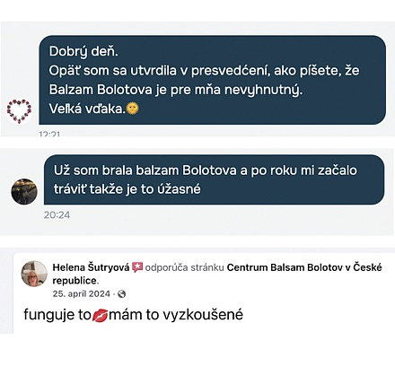
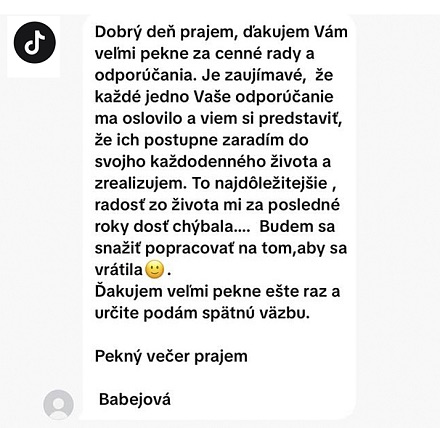
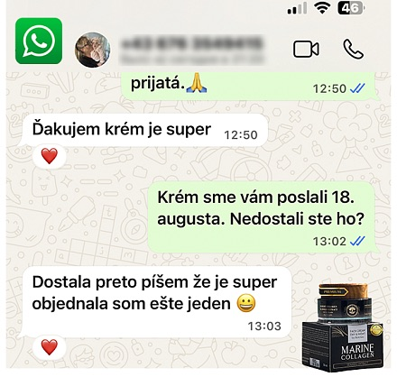
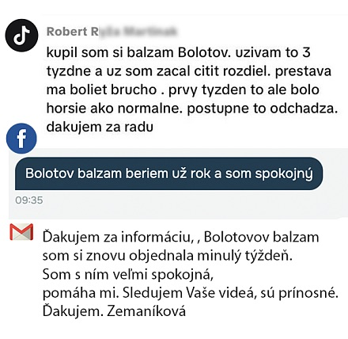
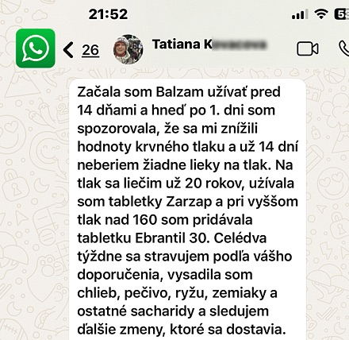
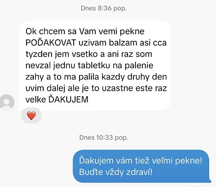
Zveřejňujeme hodnocení našich zákazníků. Pocházejí od lidí, kteří produkt zakoupili; mají individuální charakter a nejsou příslibem zdravotních účinků. Doplněk stravy není léčivým přípravkem.
Složky potravinářské kvality v přesně vyvážených poměrech.
Přispívá k normální funkci imunitního systému a k ochraně buněk před oxidativním stresem.*
Vitamin C přispívá k normální tvorbě kolagenu pro pokožku.*
Vitamin C přispívá ke snížení míry únavy a vyčerpání.*
Komplexní receptura místo mnoha doplňků.
Snadno zařadíte do každodenní stravy — v cyklech i pravidelně.
* Schválená zdravotní tvrzení týkající se vitaminu C (nařízení (EU) č. 432/2012).
Přidejte 1 čajovou lžičku balzámu do 150–200 ml vody, 2–3krát denně během jídla. Pijte brčkem, abyste chránili zubní sklovinu. Nepijte nalačno. Nepřekračujte doporučenou denní dávku.
Objem lahve je 500 ml. Při běžném užívání vystačí přibližně na 1–1,5 měsíce.
Individuální nesnášenlivost složek, těhotenství, kojení, věk do 18 let, vředová choroba a zánět žaludku ve fázi zhoršení, zvýšená kyselost žaludku, závažná onemocnění jater a ledvin. Doplněk stravy, nejedná se o léčivý přípravek.
Pokud užíváte léky, doporučuje se balzám užívat 30–40 minut před užitím tablet nebo po něm. V případě pochybností se poraďte s lékařem.
Balzám je doplněk stravy a působí jako součást každodenní vyvážené stravy. Reakce organismu je individuální — nejlépe jej užívat pravidelně, minimálně 2 týdny, v rámci zdravého životního stylu.
Jedna lahev 500 ml obvykle vystačí přibližně na 1–1,5 měsíce. Na plnou, několikatýdenní kúru se nejčastěji volí 2–3 lahve — proto nabízíme výhodnější ceny při nákupu většího množství (viz množstevní nabídka na stránce produktu).
Balzám obsahuje vitamin C, který přispívá k normální tvorbě kolagenu — důležitého pro normální funkci kůže — a k ochraně buněk před oxidativním stresem. Jde o podporu kondice pokožky zevnitř v rámci vyvážené stravy (doplněk stravy, nejedná se o léčivý přípravek).
Balzám je doplněk stravy a nenahrazuje léčbu ani pestrou stravu. Při chronických onemocněních, užívání léků, v těhotenství nebo při kojení se před užíváním poraďte s lékařem.

Získejte BEZPLATNÉHO průvodce systémem Bolotova — jednoduché principy výživy a životního stylu.


{kind=link}
{kind=link}
{kind=link}
{kind=link}
{kind=link}